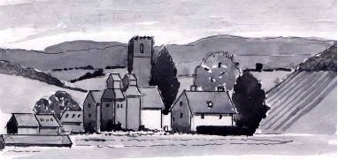

Mathon 1900
Although a century is not a great span in history it is not very easy
to think ourselves back to the year 1900. We must imagine a world
without aeroplanes, cars, tractors or the electricity which powers our
beloved household appliances. Even the power failures caused by violent
storms give us only a momentary taste of this vanished world then the
power is switched on, the lights return, the refrigerator hums again,
and we heave a sigh of relief as we are returned to our troubled but
comfortable 21st century.

The countryside, at the beginning of the last century was a quiet world with the lowing of cattle, the bleating of sheep, birdsong and the clatter of hoofs the only sounds to disturb the quiet of the fields. The occasional train might be heard, and perhaps a steam engine but these were rare occurrences. Now only in the most remote country are we free from the noise of plane, car, chain saw, tractor and other signs of our times.
England was a prosperous country, secure in its power and empire and still enjoying the lead obtained by being the first into the Industrial Revolution but not too much of this wealth had penetrated to the countryside. Nor had much changed in Mathon since 1826 when Robert Ravenhill provided a dinner at the Cliffe Arms on Easter Monday for the paymasters of the parish, the expenses not to exceed £5.
Apart from the steam engine, the only power to assist the farmer was still that of animals, the horse, and sometimes the ox, donkey or mule. The housewife’s daily routine was such as most modern women would find unacceptable. On wash days, water was drawn from the well, which supplied most houses, and in some cases still does. Some families did not even have a well, and had to fetch buckets from the nearest source. Clothes were boiled or scrubbed, dried outdoors, and ironed with a flat iron, heated at the fire, and which always seemed to be too cold or too hot and leave burn marks on the clothes.
Also very trying for a community which produced most of its own food, must have been the lack of any means of preserving food apart from salting or smoking. Even tinned food was some years away from common use.
The village looked much as it had for years. The new brick vicarage was the exception to the black and white timber framed cottages which housed most of the people. Almost all these houses which are now occupied by one family were then two or three dwellings, and since families were large, it must have been difficult to find room for everyone. For example. The 1901 census shows that 9 people were living at Lane End, 12 at Parkers, and 9 at Ravenhill. When all resources for sharing a small house with a large family had been exhausted parents must have been glad to see their elder children employed and accommodated as servants at a farm or large house. Colonel Thurlow employed 5 servants at Mathon Court. Most of the girls who went into service, would already have had experience of cleaning, cooking, and looking after small children in the family when their mother had a new baby and their pay small as it was would be a great help to their parents, when the girls unselfishly sent part of it home, perhaps also with some cast off clothes from their employer.
Boys also found employment as grooms or general farm servants taking their meals in the back kitchen and sleeping in the attic bedrooms of the farmhouse, as Leslie Lawrence did in the nineteen twenties at South Hide. Leslie was the farmer’s son but he shared the meals and sleeping quarters with his fathers hired men.
The village smelt of wood smoke and lamp oil in those days, and in summer the lanes were beautiful with the blossom of fruit trees which lined the village street from the church to Lane End. Most food was produced locally and there were few families that did not have a productive vegetable garden and a pig. Sons and daughters writing home, would enquire about the pigs health, so important was it to the family economy. Nothing provided by nature was wasted and mushrooms and blackberries were picked, and occasionally a trout was caught. Sometimes these small luxuries had to be sold to provide for winter coats and boots.
The 1901 census shows that families were still large. Several families had 5 or 6 children, and one had 9. Even then, some families managed to find room for an aged parent, or at some farms an old servant was given shelter. Some young men were boarders, preferring this to renting one of the houses which stood empty. Most of the work in the parish was still centred on the land. Of the men described as “Head of Household” 42 were farm workers, 14 more worked with horses, 4 more with cattle, and 9 were gardeners.
Owing to better travel facilities, many more men were now willing to travel to seek employment, higher pay, or a better cottage, and though nearly half the fathers of families were born in Mathon, or villages within 5 miles, the rest came from more distant places and Cheshire, Oxfordshire, Radnor, Gosport, Wiltshire, Gloucestershire Manchester, and Birmingham are all given as places of birth. It is clear that change was taking place however slowly.
Mrs. Minton’s essay which follows illustrates the life of the village in the 20th century.
- Printer-friendly version
- Login to post comments